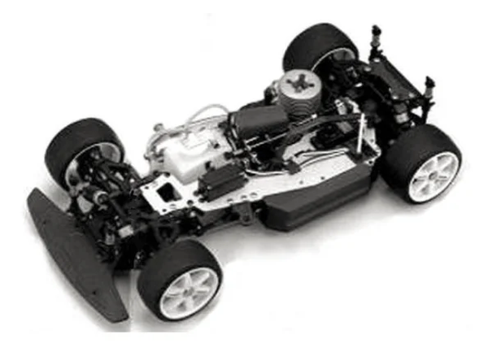

京商 FW-04

引用元画像：rcscrapyard.net
📋 基本情報
| メーカー | 京商（Kyosho） |
|---|---|
| 機種名 | FW-04（SuperTen GPシリーズ） |
| シャーシ略称 | FW-04 |
| 型番 | 31941（Castrol Supra）を代表として、以下の複数キットあり： ・31941 Castrol Supra ・31942 Castrol Mugen NSK ・31943 McLaren BMW ・31943FS McLaren BMW（4ストローク O.S. FS26S-CXエンジン搭載） ・31001 D2 AMG Mercedes Benz CLK ・31002 Warsteiner AMG Mercedes Benz CLK |
| 発売時期 | 2000年頃 |
| 価格 | 詳細不明（生産終了のため） |
| 生産状況 | 生産終了 |
| カテゴリー | ラジコンカー（1/10スケール GPツーリングカー） |
| サブカテゴリー | エンジン搭載 4WDツーリングカー |
| シリーズ | SuperTen GP 4WDシリーズ |
📏 シャーシスペック
| 全長 | 詳細不明 |
|---|---|
| 全幅 | 詳細不明 |
| 全高 | 詳細不明 |
| ホイールベース | 詳細不明 |
| フレーム | 3mmアルミプレートシャーシ |
| 全備重量 | 詳細不明 |
⚙️ 駆動系
| 駆動方式 | 4WD（シャフトドライブ方式） |
|---|---|
| デフギヤ | ギヤデフ×3（フロント・センター・リア） |
| ドライブシャフト | ドッグボーンドライブシャフト |
| ベアリング | フルボールベアリング仕様 |
| エンジン | 基本モデル：GS-15Rエンジン（リコイルスターター付属） 特別仕様：O.S. FS26S-CX 4ストロークエンジン（#31943FS McLaren BMW） |
🔧 サスペンション
| 形式 | 4輪独立懸架 |
|---|---|
| ダンパー | コイルスプリング＋オイルダンパー×4本 |
| ステアリング | 詳細不明 |
💡 特徴
SuperTen FW-04 - 2000年代の本格レーシングシャーシ
- 2000年頃に登場した京商のSuperTen GP 4WDシャーシ
- 3mm厚アルミプレートシャーシ採用（高剛性・高耐久性）
- Castrol Supra、McLaren BMW、AMG Mercedes Benz CLKなど豊富なボディバリエーション
- 4ストロークエンジン搭載モデル（#31943FS）も存在
高剛性シャーシ構成
- 3mm厚アルミプレートシャーシ（高剛性）
- シャフトドライブ4WDシステム
- フロント・センター・リアの3つのギヤデフ搭載
- コイルスプリング＋オイルダンパーの本格サスペンション
- フルボールベアリング仕様で滑らかな動作
GS-15Rエンジン標準装備
- 京商GS-15R .15エンジン搭載（基本モデル）
- リコイルスターター付属で始動が容易
- 特別仕様として4ストロークO.S. FS26S-CXエンジン搭載モデルも存在
豊富なボディバリエーション
- Castrol Supra（#31941）
- Castrol Mugen NSK（#31942）
- McLaren BMW（#31943、#31943FS）
- D2 AMG Mercedes Benz CLK（#31001）
- Warsteiner AMG Mercedes Benz CLK（#31002）
🔧 ぽすとそに工房での修理実績
修理難易度
★★★★★（非常に困難）
⚠️ 絶版で非常にパーツもシャーシも少ないため、修理は非常に困難です。
よくある故障・注意点
- 2000年頃の絶版機種のため、パーツ入手が極めて困難
- シャーシ本体の入手も困難
- ギヤデフのメンテナンスが重要（3箇所のデフ調整）
- オイルダンパーのオイル漏れ（Oリング劣化）
- エンジンのメンテナンス（燃料系統、グロープラグなど）
- 4ストロークエンジン搭載モデル（#31943FS）は特に希少
修理のポイント
- パーツが入手困難なため、破損には十分注意
- 他の京商SuperTenシリーズとの互換パーツを探す必要あり
- ギヤボックスの定期的なグリスアップ
- オイルダンパーのOリング交換・オイル補充
- ボールベアリングの清掃・注油
- 3mm厚アルミシャーシは強度が高いが過度な衝撃に注意
その他の特徴
- 2000年代初頭のビンテージマシン
- SuperTenシリーズの高剛性モデル
- 3mm厚アルミプレートシャーシが特徴
- コレクターズアイテムとしての価値が高い
- レストアには相当の知識と経験が必要
- 4ストロークエンジン搭載モデルは特に希少
- 豊富なボディバリエーションが魅力